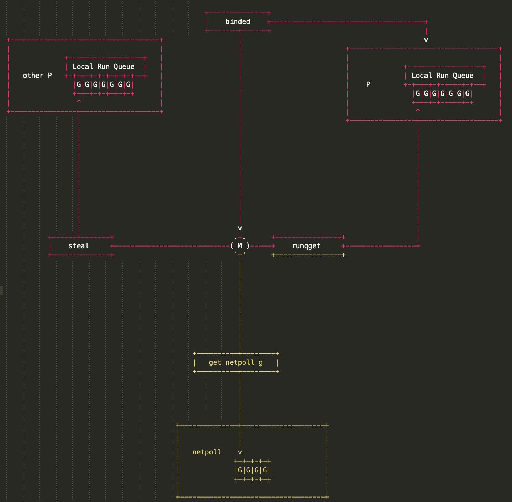
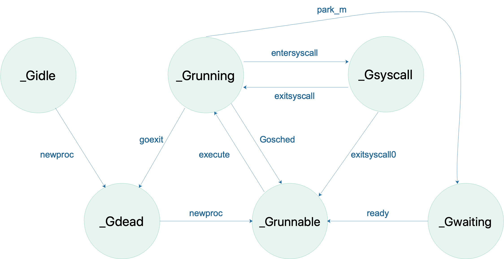
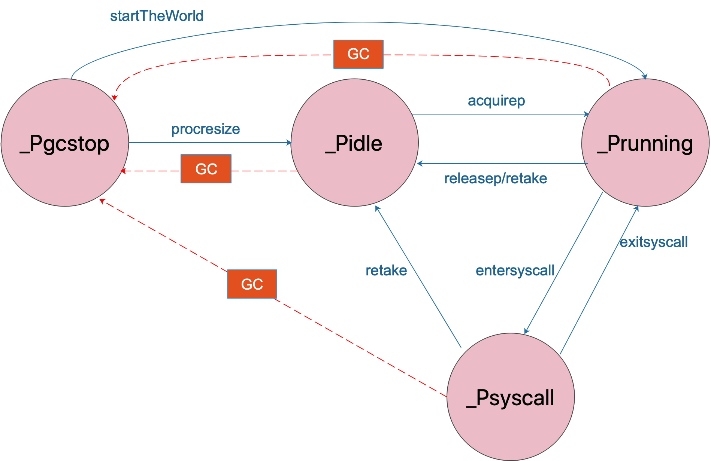
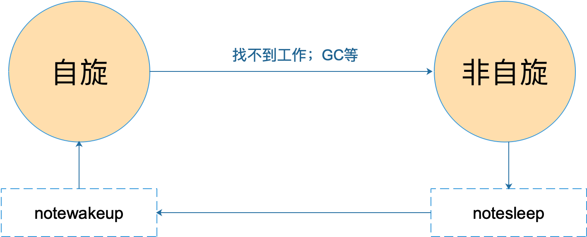

G、P、M 是 Go 调度器的三个核心组件，各司其职。在它们精密地配合下，Go 调度器得以高效运转，这也是 Go 天然支持高并发的内在动力。今天这篇文章我们来深入理解 GPM 模型。
先看 G，取 goroutine 的首字母，主要保存 goroutine 的一些状态信息以及 CPU 的一些寄存器的值，例如 IP 寄存器，以便在轮到本 goroutine 执行时，CPU 知道要从哪一条指令处开始执行。
当 goroutine 被调离 CPU 时，调度器负责把 CPU 寄存器的值保存在 g 对象的成员变量之中。
当 goroutine 被调度起来运行时，调度器又负责把 g 对象的成员变量所保存的寄存器值恢复到 CPU 的寄存器。
本系列使用的代码版本是 1.9.2，来看一下 g 的源码：
1
2
3
4
5
6
7
8
9
10
11
12
13
14
15
16
17
18
19
20
21
22
23
24
25
26
27
28
29
30
31
32
33
34
35
36
37
38
39
40
41
42
43
44
45
46
47
48
49
50
51
52
53
54
55
56
57
58
59
60
61
|
type g struct {
// goroutine 使用的栈
stack stack // offset known to runtime/cgo
// 用于栈的扩张和收缩检查，抢占标志
stackguard0 uintptr // offset known to liblink
stackguard1 uintptr // offset known to liblink
_panic *_panic // innermost panic - offset known to liblink
_defer *_defer // innermost defer
// 当前与 g 绑定的 m
m *m // current m; offset known to arm liblink
// goroutine 的运行现场
sched gobuf
syscallsp uintptr // if status==Gsyscall, syscallsp = sched.sp to use during gc
syscallpc uintptr // if status==Gsyscall, syscallpc = sched.pc to use during gc
stktopsp uintptr // expected sp at top of stack, to check in traceback
// wakeup 时传入的参数
param unsafe.Pointer // passed parameter on wakeup
atomicstatus uint32
stackLock uint32 // sigprof/scang lock; TODO: fold in to atomicstatus
goid int64
// g 被阻塞之后的近似时间
waitsince int64 // approx time when the g become blocked
// g 被阻塞的原因
waitreason string // if status==Gwaiting
// 指向全局队列里下一个 g
schedlink guintptr
// 抢占调度标志。这个为 true 时，stackguard0 等于 stackpreempt
preempt bool // preemption signal, duplicates stackguard0 = stackpreempt
paniconfault bool // panic (instead of crash) on unexpected fault address
preemptscan bool // preempted g does scan for gc
gcscandone bool // g has scanned stack; protected by _Gscan bit in status
gcscanvalid bool // false at start of gc cycle, true if G has not run since last scan; TODO: remove?
throwsplit bool // must not split stack
raceignore int8 // ignore race detection events
sysblocktraced bool // StartTrace has emitted EvGoInSyscall about this goroutine
// syscall 返回之后的 cputicks，用来做 tracing
sysexitticks int64 // cputicks when syscall has returned (for tracing)
traceseq uint64 // trace event sequencer
tracelastp puintptr // last P emitted an event for this goroutine
// 如果调用了 LockOsThread，那么这个 g 会绑定到某个 m 上
lockedm *m
sig uint32
writebuf []byte
sigcode0 uintptr
sigcode1 uintptr
sigpc uintptr
// 创建该 goroutine 的语句的指令地址
gopc uintptr // pc of go statement that created this goroutine
// goroutine 函数的指令地址
startpc uintptr // pc of goroutine function
racectx uintptr
waiting *sudog // sudog structures this g is waiting on (that have a valid elem ptr); in lock order
cgoCtxt []uintptr // cgo traceback context
labels unsafe.Pointer // profiler labels
// time.Sleep 缓存的定时器
timer *timer // cached timer for time.Sleep
gcAssistBytes int64
}
|
源码中，比较重要的字段我已经作了注释，其他未作注释的与调度关系不大或者我暂时也没有理解的。
g 结构体关联了两个比较简单的结构体，stack 表示 goroutine 运行时的栈：
1
2
3
4
5
6
7
|
// 描述栈的数据结构，栈的范围：[lo, hi)
type stack struct {
// 栈顶，低地址
lo uintptr
// 栈低，高地址
hi uintptr
}
|
Goroutine 运行时，光有栈还不行，至少还得包括 PC，SP 等寄存器，gobuf 就保存了这些值：
1
2
3
4
5
6
7
8
9
10
11
12
13
|
type gobuf struct {
// 存储 rsp 寄存器的值
sp uintptr
// 存储 rip 寄存器的值
pc uintptr
// 指向 goroutine
g guintptr
ctxt unsafe.Pointer // this has to be a pointer so that gc scans it
// 保存系统调用的返回值
ret sys.Uintreg
lr uintptr
bp uintptr // for GOEXPERIMENT=framepointer
}
|
再来看 M，取 machine 的首字母，它代表一个工作线程，或者说系统线程。G 需要调度到 M 上才能运行，M 是真正工作的人。结构体 m 就是我们常说的 M，它保存了 M 自身使用的栈信息、当前正在 M 上执行的 G 信息、与之绑定的 P 信息……
当 M 没有工作可做的时候，在它休眠前，会“自旋”地来找工作：检查全局队列，查看 network poller，试图执行 gc 任务，或者“偷”工作。
结构体 m 的源码如下：
1
2
3
4
5
6
7
8
9
10
11
12
13
14
15
16
17
18
19
20
21
22
23
24
25
26
27
28
29
30
31
32
33
34
35
36
37
38
39
40
41
42
43
44
45
46
47
48
49
50
51
52
53
54
55
56
57
58
59
60
61
62
63
64
65
66
67
68
69
70
71
72
73
74
75
76
77
78
79
80
81
82
83
84
|
// m 代表工作线程，保存了自身使用的栈信息
type m struct {
// 记录工作线程（也就是内核线程）使用的栈信息。在执行调度代码时需要使用
// 执行用户 goroutine 代码时，使用用户 goroutine 自己的栈，因此调度时会发生栈的切换
g0 *g // goroutine with scheduling stack/
morebuf gobuf // gobuf arg to morestack
divmod uint32 // div/mod denominator for arm - known to liblink
// Fields not known to debuggers.
procid uint64 // for debuggers, but offset not hard-coded
gsignal *g // signal-handling g
sigmask sigset // storage for saved signal mask
// 通过 tls 结构体实现 m 与工作线程的绑定
// 这里是线程本地存储
tls [6]uintptr // thread-local storage (for x86 extern register)
mstartfn func()
// 指向正在运行的 goroutine 对象
curg *g // current running goroutine
caughtsig guintptr // goroutine running during fatal signal
// 当前工作线程绑定的 p
p puintptr // attached p for executing go code (nil if not executing go code)
nextp puintptr
id int32
mallocing int32
throwing int32
// 该字段不等于空字符串的话，要保持 curg 始终在这个 m 上运行
preemptoff string // if != "", keep curg running on this m
locks int32
softfloat int32
dying int32
profilehz int32
helpgc int32
// 为 true 时表示当前 m 处于自旋状态，正在从其他线程偷工作
spinning bool // m is out of work and is actively looking for work
// m 正阻塞在 note 上
blocked bool // m is blocked on a note
// m 正在执行 write barrier
inwb bool // m is executing a write barrier
newSigstack bool // minit on C thread called sigaltstack
printlock int8
// 正在执行 cgo 调用
incgo bool // m is executing a cgo call
fastrand uint32
// cgo 调用总计数
ncgocall uint64 // number of cgo calls in total
ncgo int32 // number of cgo calls currently in progress
cgoCallersUse uint32 // if non-zero, cgoCallers in use temporarily
cgoCallers *cgoCallers // cgo traceback if crashing in cgo call
// 没有 goroutine 需要运行时，工作线程睡眠在这个 park 成员上，
// 其它线程通过这个 park 唤醒该工作线程
park note
// 记录所有工作线程的链表
alllink *m // on allm
schedlink muintptr
mcache *mcache
lockedg *g
createstack [32]uintptr // stack that created this thread.
freglo [16]uint32 // d[i] lsb and f[i]
freghi [16]uint32 // d[i] msb and f[i+16]
fflag uint32 // floating point compare flags
locked uint32 // tracking for lockosthread
// 正在等待锁的下一个 m
nextwaitm uintptr // next m waiting for lock
needextram bool
traceback uint8
waitunlockf unsafe.Pointer // todo go func(*g, unsafe.pointer) bool
waitlock unsafe.Pointer
waittraceev byte
waittraceskip int
startingtrace bool
syscalltick uint32
// 工作线程 id
thread uintptr // thread handle
// these are here because they are too large to be on the stack
// of low-level NOSPLIT functions.
libcall libcall
libcallpc uintptr // for cpu profiler
libcallsp uintptr
libcallg guintptr
syscall libcall // stores syscall parameters on windows
mOS
}
|
再来看 P，取 processor 的首字母，为 M 的执行提供“上下文”，保存 M 执行 G 时的一些资源，例如本地可运行 G 队列，memeory cache 等。
一个 M 只有绑定 P 才能执行 goroutine，当 M 被阻塞时，整个 P 会被传递给其他 M ，或者说整个 P 被接管。
1
2
3
4
5
6
7
8
9
10
11
12
13
14
15
16
17
18
19
20
21
22
23
24
25
26
27
28
29
30
31
32
33
34
35
36
37
38
39
40
41
42
43
44
45
46
47
48
49
50
51
52
53
54
55
56
57
58
59
60
|
// p 保存 go 运行时所必须的资源
type p struct {
lock mutex
// 在 allp 中的索引
id int32
status uint32 // one of pidle/prunning/...
link puintptr
// 每次调用 schedule 时会加一
schedtick uint32
// 每次系统调用时加一
syscalltick uint32
// 用于 sysmon 线程记录被监控 p 的系统调用时间和运行时间
sysmontick sysmontick // last tick observed by sysmon
// 指向绑定的 m，如果 p 是 idle 的话，那这个指针是 nil
m muintptr // back-link to associated m (nil if idle)
mcache *mcache
racectx uintptr
deferpool [5][]*_defer // pool of available defer structs of different sizes (see panic.go)
deferpoolbuf [5][32]*_defer
// Cache of goroutine ids, amortizes accesses to runtime·sched.goidgen.
goidcache uint64
goidcacheend uint64
// Queue of runnable goroutines. Accessed without lock.
// 本地可运行的队列，不用通过锁即可访问
runqhead uint32 // 队列头
runqtail uint32 // 队列尾
// 使用数组实现的循环队列
runq [256]guintptr
// runnext 非空时，代表的是一个 runnable 状态的 G，
// 这个 G 被 当前 G 修改为 ready 状态，相比 runq 中的 G 有更高的优先级。
// 如果当前 G 还有剩余的可用时间，那么就应该运行这个 G
// 运行之后，该 G 会继承当前 G 的剩余时间
runnext guintptr
// Available G's (status == Gdead)
// 空闲的 g
gfree *g
gfreecnt int32
sudogcache []*sudog
sudogbuf [128]*sudog
tracebuf traceBufPtr
traceSwept, traceReclaimed uintptr
palloc persistentAlloc // per-P to avoid mutex
// Per-P GC state
gcAssistTime int64 // Nanoseconds in assistAlloc
gcBgMarkWorker guintptr
gcMarkWorkerMode gcMarkWorkerMode
runSafePointFn uint32 // if 1, run sched.safePointFn at next safe point
pad [sys.CacheLineSize]byte
}
|
GPM 三足鼎力，共同成就 Go scheduler。G 需要在 M 上才能运行，M 依赖 P 提供的资源，P 则持有待运行的 G。你中有我，我中有你。
描述三者的关系：

M 会从与它绑定的 P 的本地队列获取可运行的 G，也会从 network poller 里获取可运行的 G，还会从其他 P 偷 G。
最后我们从宏观上总结一下 GPM，这篇文章尝试从它们的状态流转角度总结。
首先是 G 的状态流转：

说明一下，上图省略了一些垃圾回收的状态。
接着是 P 的状态流转：

通常情况下（在程序运行时不调整 P 的个数），P 只会在上图中的四种状态下进行切换。 当程序刚开始运行进行初始化时，所有的 P 都处于 _Pgcstop 状态， 随着 P 的初始化（runtime.procresize），会被置于 _Pidle。
当 M 需要运行时，会 runtime.acquirep 来使 P 变成 Prunning 状态，并通过 runtime.releasep 来释放。
当 G 执行时需要进入系统调用，P 会被设置为 _Psyscall， 如果这个时候被系统监控抢夺（runtime.retake），则 P 会被重新修改为 _Pidle。
如果在程序运行中发生 GC，则 P 会被设置为 _Pgcstop， 并在 runtime.startTheWorld 时重新调整为 _Prunning。
最后，我们来看 M 的状态变化：

M 只有自旋和非自旋两种状态。自旋的时候，会努力找工作；找不到的时候会进入非自旋状态，之后会休眠，直到有工作需要处理时，被其他工作线程唤醒，又进入自旋状态。